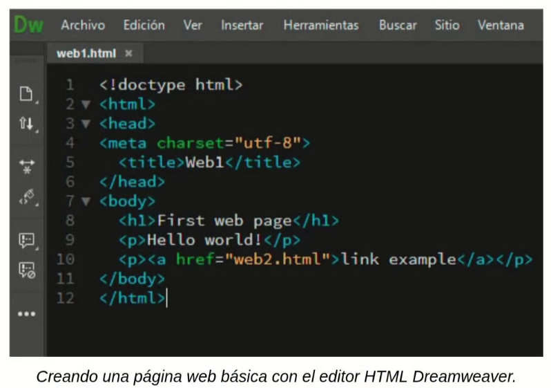

Una página web básica es un archivo que tiene texto en su interior, el código HTML. Para indicar al sistema operativo y a los navegadores que este archivo es una página web, debe tener la extensión ".html", como en el ejemplo de la derecha.
Se puede crear una página web escribiendo el código HTML en cualquier editor de texto. En las prácticas 1, 2 y 3 veremos cómo hacer una web utilizando el editor de texto más sencillo que hay: el bloc de notas del sistema operativo.
Los diseñadores profesionales de páginas web utilizan programas especializados para escribir el código HTML llamados "editores HTML". Son programas que facilitan la escritura del código HTML, por ejemplo destacando con colores las etiquetas del código, recordando el nombre de algunas etiquetas, avisando si hay errores, etc. Abajo puedes ver un ejemplo.

Existen muchos editores HTML, aquí se muestran algunos de los más usados.
- Dreamweaver
- Visual Studio Code
- Sublime Text
- Brackets
- Atom